Clínico com base teórica na prática da Psicanálise, experiência na condução de análises e escuta do sujeito a partir do desejo e da fala, promovendo compreensão das dinâmicas psíquicas profundas, compromissado em criar um ambiente terapêutico seguro e ético na cura pela fala. Além disso, estudo fenômenos culturais e sociais, mantendo compromisso com uma análise rigorosa e o desenvolvimento contínuo na saúde mental.
Entrar em contato
Auxilia a busca entender as raízes do sofrimento, explorando emoções, pensamentos e experiências de vida. O terapeuta ajuda a identificar padrões inconscientes que afetam a vida, indo além do alívio dos sintomas.


O acompanhamento terapêutico ajuda a identificar padrões repetitivos que se traduzem em sofrimento, muitas vezes inconscientes. Com isso, você pode encontrar novos caminhos para viver com mais liberdade e autenticidade.
A terapia psicanalítica proporciona um ambiente seguro para expressar sentimentos, angústias e desejos. Esse espaço de escuta e reflexão facilita uma transformação profunda, ajudando a enfrentar desafios e encontrar sentido nas experiências.


Compreender sua relação com sua autoimagem, auxiliar a percepção e consciência sobre sentimentos e reações, promovendo a forma como você se relaciona. Também auxiliando no enfrentamento de conflitos internos e externos, proporcionando relações mais saudáveis e uma visão mais acolhedora de si mesmo.
Feedbacks
O anonimato dos comentários, assim como a autorização de suas publicações, preza a dignidade e integridade do paciente em consonância com o código de ética do Conselho Federal de Psicologia.